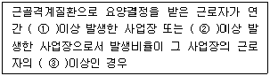

산업위생관리산업기사 (2005-03-06 기출문제)
1과목: 산업위생학 개론
1. 구리(Cu) 독성에 관한 인체실험 결과 안전흡수량(일기준)이 체중 kg 당 0.1mg 이었다. 1일 8시간 작업시 구리의 체내흡수를 안전흡수량 이하로 유지하려면 공기중 구리농도는 얼마이하여야 하는가? (단,성인근로자 평균체중 70kg, 작업시 폐환기율 1.2m3/hr, 체내잔류율 1.0)
- 0.61 mg/m3
- 0.73 mg/m3
- 0.85 mg/m3
- 0.93 mg/m3
(정답률: 알수없음)

2. 심한 근육노동을 하는 근로자에게 충분히 공급되어야 할 비타민은?
- 비타민 A
- 비타민 B1
- 비타민 B2
- 비타민 C
(정답률: 82%)
3. 유해물질에 대한 근로자의 노출 및 흡수정도를 평가하는 데는 생물학적 측정(biological monitoring)이 필요하다. 생물학적 측정시 주로 이용하는 시료와 거리가 먼 것은?
- 소변
- 땀
- 혈액
- 호기(exhaled air)
(정답률: 47%)
4. 인간공학 활용의 단계라 할 수 없는 것은?
- 준비단계
- 선택단계
- 검토단계
- 적용단계
(정답률: 34%)
5. 폐암발생율을 높이는 진폐증으로 가장 적절한 것은?
- 규폐증
- 석면폐증
- 면폐증
- 농부폐증
(정답률: 59%)
6. 1775년 영국의 외과의사로서 직업성암을 최초로 보고하였으며, 어린이 굴뚝청소부에게 많이 발생하는 음낭암(scrotal cancer)의 원인물질을 '검댕(soot)'이라 규명한 사람은?
- Sir George Baker
- Percival Pott
- Pliny the Elder
- Alice Hamilton
(정답률: 80%)
7. 1911년에 진동공구에 의한 수지의 레이노드씨 현상을 상세히 보고한 사람은?
- Loriga
- G.Agricola
- Galen
- Celsus
(정답률: 50%)
8. 미국산업위생학술원(AAIH)에서는 산업위생분야에 종사하는 사람들이 반드시 지켜야 할 윤리강령을 채택하였다. 그 내용과 관계없는 것은?
- 전문가로서의 책임
- 근로자에 대한 책임
- 환경오염에 관한 책임
- 일반 대중에 대한 책임
(정답률: 79%)
9. 작업장에서 현재 총흡음량은 500 sabins이다. 이 작업장을 천장과 벽 부분에 흡음재를 이용하여 2,000 sabins를 추가 하였을 때 소음(NR)은 얼마나 감소하겠는가?
- 약 6 dB
- 약 5 dB
- 약 4 dB
- 약 7 dB
(정답률: 24%)
10. 젊은 남성의 육체적 작업능력(PWC)은 16 kcal/min이다. 이때 하루 8시간동안 작업할 수 있는 작업의 강도는?
- 약 4.0 kcal/min
- 약 4.8 kcal/min
- 약 5.3 kcal/min
- 약 8.6 kcal/min
(정답률: 72%)
11. 1945년 일본에서 '이타이이타이병'이란 중독사건이 생겨 수많은 환자가 발생, 사망한 사례가 있었다. 어느 물질에 의한 것인가?
- 납
- 크롬
- 수은
- 카드뮴
(정답률: 85%)
12. 국소피로를 평가하는 데는 근전도(EMG)를 많이 이용한다. 피로한 근육에서 측정된 EMG에서 나타나는 특징이 아닌것은?
- 저주파수(0∼40㎐) 힘의 증가
- 고주파수(40∼200㎐) 힘의 감소
- 평균주파수의 감소
- 총전압의 감소
(정답률: 90%)
13. 환경속에서 중독을 일으키는 유해물질의 공기 중 농도(C)와 폭로시간(t)의 곱은 일정(k)하다는 법칙은?
- Halden의 법칙
- Lambert의 법칙
- Henry의 법칙
- Haber의 법칙
(정답률: 82%)
14. PWC가 16kcal/min인 근로자가 1일 8시간 동안 물체 운반작업을 하고 있다. 이때의 작업대사량은 9kcal/min 이고, 휴식시의 대사량은 1.5 kcal/min 일 때 적절한 휴식시간은? (단, Hertig 식 적용)
- 14분 휴식, 46분 작업
- 18분 휴식, 42분 작업
- 22분 휴식, 38분 작업
- 29분 휴식, 31분 작업
(정답률: 50%)
15. 미국산업위생전문가협의회(ACGIH)에서는 작업강도를 경작업, 중등도작업, 심한작업으로 구분하였다. 다음중 경작업에 소비열량기준은?
- 100 kcal/hr 이하
- 150 kcal/hr 이하
- 200 kcal/hr 이하
- 250 kcal/hr 이하
(정답률: 29%)
16. 금속작업 근로자에게 발생된 만성중독의 특징으로 코점막의 염증, 비중격천공 등의 증상을 일으키는 물질은?
- 납
- 크롬
- 수은
- 카드뮴
(정답률: 80%)
17. 근로자가 휴식중일 때의 산소소비량(oxygen uptake)은 보통 얼마인가?
- 0.10 L/min
- 0.25 L/min
- 0.50 L/min
- 1.5 L/min
(정답률: 93%)
18. 아래의 내용은 사업주가 근골격계질환 예방 관리프로그램을 수립 시행하여야 하는 경우이다. ( )안에 알맞는 내용은?

- ① 5인 ② 10인 ③ 5%
- ① 5인 ② 10인 ③ 10%
- ① 10인 ② 5인 ③ 5%
- ① 10인 ② 5인 ③ 10%
(정답률: 알수없음)
19. 허용농도(TLV) 적용상의 주의사항으로 틀린 것은?
- 독성의 강도를 비교할 수 있는 지표는 아니다.
- 반드시 산업위생전문가에 의하여 적용되어야 한다.
- 기존의 질병이나 육체적 조건을 판단하기 위한 척도로 사용될 수 없다.
- 안전농도와 위험농도를 구분하는 경계기준이 된다.
(정답률: 70%)
20. 산업피로의 발생기전이라고 할 수 없는 것은?
- 중간 대사물질의 축적
- 신체조절기능의 저하
- 신체내 포도당의 증가
- 산소, 영양소등 에너지원의 소모
(정답률: 70%)
2과목: 작업환경측정 및 평가
21. 작업장내 유해물질 측정에 대한 기초적인 이론을 설명한 것으로 틀린 것은?
- 작업장내 유해화학 물질의 농도는 일반적으로 25℃, 760mmHg의 조건하에서 기중농도로서 나타낸다.
- 가스 또는 증기의 ppm과 ㎎/m3간의 상호농도 변환은 ㎎/m3 = ppm×(24.46/M)(M:분자량)으로 계산한다.
- 가스란 상온 상압하에서 기체상으로 존재하는 것을 말하며 증기란 상온 상압하에서 액체 또는 고체인 물질이 증기압에 따라 휘발 또는 승화하여 기체로 되어 있는 것을 말한다.
- 유해물질의 측정에는 공기중에 존재하는 유해 물질의 농도를 그대로 측정하는 방법과 공기로 부터 분리 농축하는 방법이 있다.
(정답률: 71%)
22. 작업환경중에 Toluene(TLV=100ppm) 65ppm, Benzene(TLV=10ppm) 2ppm, Sltyrene(TLV=50ppm) 15ppm이 혼합하여 존재하고 있을 때 혼합증기의 허용농도는? (단, 상가작용 기준)
- 71.3ppm
- 81.3ppm
- 84.3ppm
- 94.3ppm
(정답률: 34%)
23. 빛파장의 단위로 사용되는 Å(Angstrom)을 국제표준 단위계(SI)로 바르게 나타낸 것은?
- 10-6m
- 10-8m
- 10-10m
- 10-12m
(정답률: 27%)
24. 흡광광도법에서 사용되는 흡수셀의 재질중 자외선 영역의 파장범위에서 사용되는 흡수셀의 재질로 알맞는 것은?
- 석영
- 플라스틱
- 유리
- 고무
(정답률: 47%)
25. '1차표준'에 관한 설명으로 알맞지 않은 것은?
- 물리적 크기에 의해서 공간의 부피를 직접 측정할 수 있는 기구이다.
- 펌프의 유량을 보정하는데는 1차표준으로 비누거품미터가 가장 널리 이용된다.
- Pitot 튜브는 기류를 측정하는 1차표준으로 보정이 필요없다.
- 로타미터는 유량을 측정하는 1차표준으로 가장 일반적인 기기이다.
(정답률: 84%)
26. 작업자의 폭로농도를 측정하기위해 작업자 호흡기에 가까이 부착하여 측정하는 기기명은?
- Personal air sampler
- Low volume air sampler
- High volume air sampler
- Anderson air sampler
(정답률: 40%)
27. 방사선 작업시 작업자의 실질적인 방사선 폭로량을 평가하기 위해 사용되는 것은?
- 필름뱃지(Film badge)
- Lux meter
- 개인시료 포집장치
- 상대농도 측정계
(정답률: 75%)
28. 가스상 물질을 시료로 채취할 때 다음중 연속시료채취방법을 사용하여야 하는 경우와 가장 거리가 먼 것은?
- 오염물질의 농도가 시간에 따라 변할 때
- 비흡수성 비흡착성인 가스상물질일 때
- 공기중 오염물질의 농도가 낮을 때
- 시간가중평균치를 구하고자 할 때
(정답률: 27%)
29. 8시간 작업하는 근로자가 200 ppm 농도에 1시간, 100 ppm농도에 2시간, 50 ppm의 3시간 동안 TCE에 노출되었다. 이 근로자의 8시간 TWA 농도는?
- 35.7 ppm
- 68.7 ppm
- 91.7 ppm
- 116.7 ppm
(정답률: 54%)
30. 누적소음 폭로량 측정을 사용하여 작업장의 소음을 측정하였다. 다음 중 시간 가중 평균소음(㏈)을 구하는 식은? (단, D : 누적소음폭로량(%)이다.)
- 16.61log(D/100)+90
- 16.61log(100/D)+90
- 20log(D/100)+90
- 20log(100/D)+90
(정답률: 50%)
31. 다음 중 실내의 기류측정에 사용되는 기구는?
- 카타온도계
- 기류온도계
- 흑구온도계
- 건습구온도계
(정답률: 47%)
32. 공기중 벤젠(분자량=78.1)을 활성탄관에 0.1 L/분의 유량으로 2시간 동안 채취하여 분석한 결과 2.5 mg이 나왔다. 공기중 벤젠의 농도는 몇 ppm인가? (단, 공시료에서는 벤젠이 검출되지 않았으며, 25℃, 1기압 기준)
- 65.3
- 75.4
- 81.2
- 92.8
(정답률: 59%)
33. 석면측정방법에 관한 설명으로 알맞지 않은 것은?
- 편광현미경법 : 고형시료분석에 사용한다.
- 위상차현미경법 : 다른방법에 비해 복잡하나 석면의 감별을 쉽게 할 수 있다.
- X선회절법 : 값이 비싸고 조작이 복잡하다.
- 전자현미경법 : 공기 중 석면시료분석에 가장 정확한 방법으로 석면의 감별분석이 가능하다.
(정답률: 67%)
34. 10㎜ nylon cyclone을 이용하여 호흡성분진을 측정하고자 한다. 이때 적절한 공기유량은?
- 1.0ℓ/min
- 1.2ℓ/min
- 1.7ℓ/min
- 2.0ℓ/min
(정답률: 30%)
35. 공기중의 유해물질, 분진등을 측정시 시료를 채취하지 않고 측정 오차를 보정하기 위하여 사용하는 시료를 무엇이라 하는가?
- filter sample
- blank sample
- random sample
- mean sample
(정답률: 47%)
36. 다음 중 전신진동의 주파수 범위로 가장 알맞은 것은?
- 1 - 20㎐
- 2 - 80㎐
- 100 - 300㎐
- 500 - 1000㎐
(정답률: 100%)
37. 극성류의 유기용제, 산등과 같은 시료를 채취하는데 가장 적합한 포집매체는?
- PTFE 막여과지
- 실리카겔관
- MCE 막여과지
- 활성탄관
(정답률: 27%)
38. 용액 1ℓ에 녹아있는 용질의 g당량수로 나타내는 농도는?
- 몰(molarity)
- 몰랄(molality)
- 포말(formality)
- 노르말(normality)
(정답률: 10%)
39. 우리나라 작업장내 공기중의 석면섬유, 먼지, 입자상물질, 벤젠, 그리고 방사성물질 등의 농도와 대기 중 이산화황농도의 측정 결과를 분포화 시킬 때 볼 수 있는 산업위생통계의 일반적인 분포는?
- 정규분포
- 대수 정규분포
- t-분포
- f-분포
(정답률: 64%)
40. 온도 27℃인 때의 체적이 1m3인 이상 기체를 온도 127℃까지 상승시켰을 때의 변화된 최종체적은? (단, 기타 조건은 변화 없음)
- 1.33m3
- 1.43m3
- 1.53m3
- 1.63m3
(정답률: 70%)
3과목: 작업환경관리
41. 호흡용 보호구인 방진마스크를 선택할 경우의 조건중 옳지 못한 것은?
- 분진포집효율이 높을 것
- 시야가 넓은 것
- 안면에서의 밀착성이 큰 것
- 흡기, 배기저항이 높은 것
(정답률: 60%)
42. 산업장에서 사용물질의 독성이나 위험성을 줄이기 위하여 사용물질을 변경하는 경우로 가장 타당한 것은?
- 유기합성용매로 지방족화합물을 사용하던 것을 방향족화합물의 휘발유계 용매로 전환한다.
- 금속제품의 탈지에 계면활성제를 사용하던 것을 트리클로로에틸렌으로 전환한다.
- 분체의 원료는 입자가 큰 것으로 전환한다.
- 금속제품 도장용으로 수용성 도료를 유기용제로 전환한다.
(정답률: 80%)
43. 산소가 결핍된 장소에서 주로 사용하는 호흡용보호구는?
- 방진마스크
- 일산화탄소용 방독마스크
- 산성가스용 방독마스크
- 호스마스크
(정답률: 82%)
44. 생산공정 작업방법 개선의 예와 가장 거리가 먼 것은?
- 분진이 비산되는 작업에 습식 공법의 채택
- 전기를 이용한 흡착식 페인트 분무방식을 공기식 직접 분무방식으로 변경
- 고속회전식 그라인더 작업을 저속 연마작업으로 변경
- 금속을 두들겨 자르는 것을 톱으로 자르는 것으로 변경
(정답률: 37%)
45. 인체와 환경사이에서 일어나는 열교환은 4가지 물리적법칙에 따라 환경과 접하고 있는 피부를 통하여 이루어진다. 4가지 물리적 요인과 가장 거리가 먼 것은?
- 증발
- 전도
- 반사
- 대류
(정답률: 22%)
46. 진동의 생체작용은 전신진동과 국소진동으로 나누어 관찰할 수 있다. 아래 문항중 전신진동의 생체작용으로 나타나는 증상과 가장 거리가 먼 것은?
- 말초혈관의 수축과 혈압상승
- 조혈기능 장해로 인한 빈혈
- 발한, 피부 전기저항의 저하
- 산소소비량 증가와 폐환기 촉진
(정답률: 31%)
47. 도노선(Dorno - ray)은 자외선의 대표적인 광선이다. 이 빛의 파장은?
- 280 ∼ 315Å
- 215 ∼ 280Å
- 2800 ∼ 3150Å
- 2150 ∼ 2800Å
(정답률: 71%)
48. 직접적인 마취작용은 없으나 체내에서 가수분해(유기산과 알콜 형성)하여 2차적으로 마취작용을 내는 화학물질은?
- 에스테르류
- 파라핀계탄화수소
- 이소프로필에테르
- 아세틸렌계탄화수소
(정답률: 25%)
49. 저온환경에서는 환경온도와 대류가 체열을 방출하는 이화학적 조절에 가장 중요하게 영향을 미치고 있다. 다음 중 저온의 영향이 아닌 것은?
- 식욕감소
- 피부혈관의 수축
- 말초혈관의 수축
- 근육긴장
(정답률: 72%)
50. 생물학적 폭로지표로 이용되는 대사산물이 메틸마뇨산인 물질은?
- 트리클로에틸렌(TCE)
- 벤젠
- 크실렌
- 톨루엔
(정답률: 60%)
51. 일반적으로 작업장의 신축시 창의 면적은 방바닥 면적의 어느 정도가 적당한가?
- 1/2 ~ 1/3
- 1/3 ~ 1/4
- 1/5 ~ 1/7
- 1/7 ~ 1/9
(정답률: 79%)
52. 방열복이나 방열장갑의 재료로 가장 많이 사용되는 것은?
- 석면
- 면섬유
- 고탄성고무
- 알루미늄
(정답률: 62%)
53. 1촉광의 광원으로 부터 한 단위입체각으로 나가는 광속의 단위는?
- Lumem
- Lux
- Footcandle
- Lambert
(정답률: 72%)
54. 유기용제의 증기가 가장 활발하게 발생될 수 있는 환경조건은?
- 낮은 온도와 낮은 기압
- 높은 온도와 높은 기압
- 높은 온도와 낮은 기압
- 낮은 온도와 높은 기압
(정답률: 50%)
55. 적용화학물질이 밀랍, 탈수라노린, 파라핀, 탄산마그네슘등이며 광산류, 유기산, 염류 및 무기염류 취급작업 용도로 사용되는 보호크림으로 가장 적절한 것은?
- 피막형크림
- 차광크림
- 소수성크림
- 친수성크림
(정답률: 38%)
56. 열경련의 주요원인이 되는 것은?
- 수분 및 혈중 염분 손실
- 뇌온도 상승
- 순환기 부조화
- 중추신경 이상
(정답률: 70%)
57. 다음 중 방진재료와 가장 거리가 먼 것은?
- 방진고무
- 코르크
- 강화된 유리섬유
- Felt
(정답률: 50%)
58. 고압환경에서의 인체작용인 2차적인 가압현상(화학적장해)에 관한 설명으로 알맞지 않은 것은?
- 산소중독증세는 고압산소에 대한 폭로가 중지되어도 계속되며 장기적인 장해로 남는 경우가 많다.
- 4기압 이상에서 공기중의 질소가스는 마취작용을 나타내 작업력의 저하, 기분의 변환, 여러정도의 다행증(euphoria)이 일어난다.
- 산소의 분압이 2기압이 넘으면 산소중독증세가 나타난다.
- 고압환경의 이산화탄소농도는 대기압으로 환산하여 0.2%를 초과해서는 안된다.
(정답률: 39%)
59. 방독마스크의 흡수제로서 가장 많이 사용되는 물질은?
- silicagel
- sodalime
- hopcalite
- activated carbon
(정답률: 34%)
60. 다환방향족 탄화수소류(PAH)에 관한 설명으로 틀린 것은?
- 흡연 또는 연소공정에서 주로 생성된다.
- 극성의 수용성 화합물로 호흡기로 쉽게 흡수된다.
- 대사중에 arene oxide를 생성한다.
- 연속적으로 폭로된다는 것은 불가피하게 발암성으로 진행된다.
(정답률: 39%)
4과목: 산업환기
61. 국소배기 시설의 계통도(배열순서)로 가장 일반적인 것은?
- 후드 → 공기정화장치 → 닥트 → 송풍기 → 배기구
- 후드 → 닥트 → 공기정화장치 → 송풍기 → 배기구
- 후드 → 송풍기 → 공기정화장치 → 닥트 → 배기구
- 후드 → 닥트 → 송풍기 → 공기정화장치 → 배기구
(정답률: 알수없음)
62. 정상기압은 1atm, 760㎜Hg이며 1013.25mbar이다. 30㎜Hg는 몇 ㎜H20인가?
- 218㎜H20
- 322㎜H20
- 408㎜H20
- 560㎜H20
(정답률: 30%)
63. 깃의 구조가 분진을 자체정화할 수 있도록 되어 있어 고농도 분진함유공기나 부식성이 강한 공기를 이송하는데 많이 이용되는 원심력송풍기의 종류는?
- 축류팬
- 후향날개형 송풍기
- 전향날개형 송풍기
- 평판형(방사형) 송풍기
(정답률: 73%)
64. 톨루엔(㎿ = 92)의 증기 발생량은 300g/시간이다. 실내의 평균농도를 억제농도(100ppm, 377㎎/m3)로 하기 위해 전체환기를 할 경우 필요환기량은? (단, 표준상태 기준, K=1 이라 가정함)
- 약 13m3/분
- 약 23m3/분
- 약 33m3/분
- 약 43m3/분
(정답률: 16%)
65. 송풍기의 회전수를 2배 증가시키면 동력은 몇배 증가하겠는가?
- 2배
- 4배
- 8배
- 16배
(정답률: 60%)
66. 전체환기를 활용하기에 가장 적절치 못한 유해인자는?
- 나무분진
- 톨루엔 증기
- 이산화탄소
- 아세톤 증기
(정답률: 39%)
67. 용접작업시 발생되는 흄(Fume)을 제거하기 위해서 외부식 후드를 설치하려고 한다. 후드 개구면에서 흄 발생지점까지의 거리가 0.25m, 제어속도는 0.5m/sec, 후드개구 면적이 0.5m2일 때 필요한 송풍량(m3/min)은? (단, 기타 조건은 고려하지 않음)
- 17
- 34
- 51
- 68
(정답률: 56%)
68. 환기시스템에서 덕트의 마찰손실을 설명한 것 중 틀린것은? (단, Darcy-Weisbach 방정식 기준 )
- 마찰손실은 덕트 직경에 반비례한다.
- 마찰손실은 속도 제곱에 반비례한다.
- 마찰손실은 Moody chart에서 구한 마찰계수를 적용하여 구한다.
- 마찰손실은 덕트의 길이에 비례한다.
(정답률: 36%)
69. 1기압에서 직경이 20㎝인 덕트의 동점성계수가 2×10-4m2/sec 인 기체가 6m/sec로 흐를 때 레이놀즈 수는?
- 4000
- 6000
- 8000
- 9000
(정답률: 50%)
70. 송풍기의 베어링에 대한 점검사항은?
- 송풍기의 이상 소음발생 유무 확인
- 캔버스 이음매 파손 여부 확인
- 벨트의 굴곡이 적정한지를 확인
- 벨트에 마모, 손상이 있는지 확인
(정답률: 40%)
71. 전체환기 방식에 대한 다음 설명중 틀린 것은?
- 오염이 높은 작업장은 실내압을 매우 높은 양압(+)을 유지하여야 한다.
- 청정공기가 필요한 작업장은 실내압을 양압(+)으로 유지 한다.
- 자연환기의 작업장내외의 압력차는 몇 mmH2O 이하의 차이이므로 공기를 정화해야 할 때는 인공환기를 해야 한다.
- 자연환기는 기계환기보다 보수가 용이하다.
(정답률: 37%)
72. 환기장치에서 관경이 300mm인 직관을 통하여 풍량 95m3/min의 표준공기를 송풍할 때 관내 평균 풍속은?
- 약 22 m/sec
- 약 32 m/sec
- 약 42 m/sec
- 약 52 m/sec
(정답률: 46%)
73. 국소배기시설의 투자비와 운전비를 적게하고자 한다면 어떤 조건을 갖추어야 하는가?
- 후드개구면적 증가
- 제어속도 증가
- 필요송풍량 감소
- 포촉점의 원거리 유지
(정답률: 60%)
74. 사이클론의 집진율을 높이는 방법으로 분진박스나 호퍼부에서 처리가스의 일부를 흡인하여 사이클론내의 난류현상을 억제시킴으로써 집진된 먼지의 비산을 방지시키는 방법을 무엇이라 하는가?
- 블로우다운 효과
- 멀티 사이클론 효과
- 원심력 효과
- 중력침강 효과
(정답률: 75%)
75. 곡관의 각이 90°, 곡관의 곡률반경이 2.50, 속도압이 15mmAq일 때 압력손실계수는 0.22이다. 이러한 곡관의 곡률반경과 여타조건이 같을 때, 곡관의 각을 45°로 변동한다면 압력손실은?
- 1.55mmAq
- 1.65mmAq
- 1.75mmAq
- 1.85mmAq
(정답률: 30%)
76. 덕트 합류시 균형유지 방법중 설계에 의한 정압균형 유지법의 단점으로 틀린 것은?
- 설계시 잘못된 유량을 고치기가 어렵다.
- 설계가 복잡하고 시간이 걸린다.
- 최대저항경로 선정이 잘못되었을 경우 설계시 발견이 어렵다.
- 설계유량 산정이 잘못되었을 경우, 수정은 덕트크기 변경을 필요로 한다.
(정답률: 58%)
77. 다음의 공기정화장치 중 가스상 물질을 가장 효과적으로 제거할 수 있는 것은?
- 싸이클론
- 스크라버
- 백필터
- 전기집진기
(정답률: 10%)
78. 전기집진장치의 장점과 가장 거리가 먼 것은?
- 미세한 입자의 포집이 용이하다.
- 압력손실이 낮고 대용량의 가스처리가 가능하다.
- 설치된 후 운전조건의 변화에 유연성이 크다.
- 광범위한 온도범위에서 적용이 가능하다.
(정답률: 47%)
79. 플레넘으로도 불리며 슬롯 후드의 뒤쪽에 위치하여 압력을 균일화시키는 것은?
- 테이퍼
- 차폐막
- 충만실
- 플랜지
(정답률: 46%)
80. 환기시설을 효율적으로 운영하기 위해서는 공기공급 시스템이 필요하다. 공기공급 시스템이 필요한 이유가 아닌것은?
- 국소배기 장치의 효율적인 작동
- 작업장의 교차(방해)기류를 생성
- 연료 절약
- 안전사고 예방
(정답률: 70%)